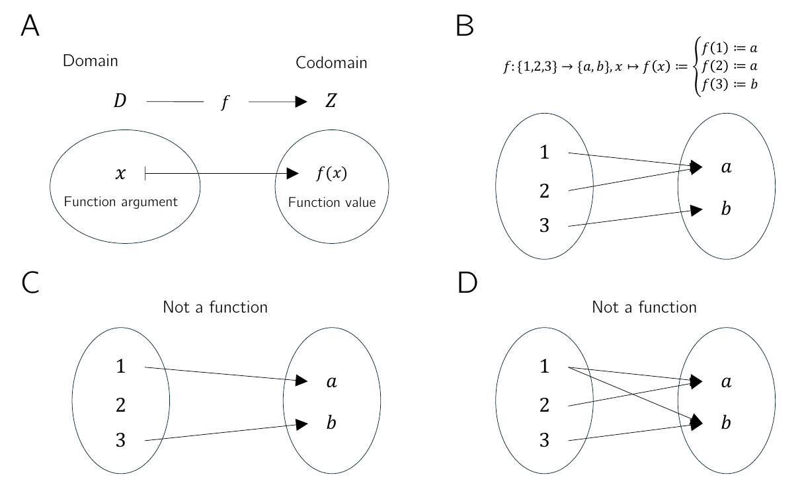
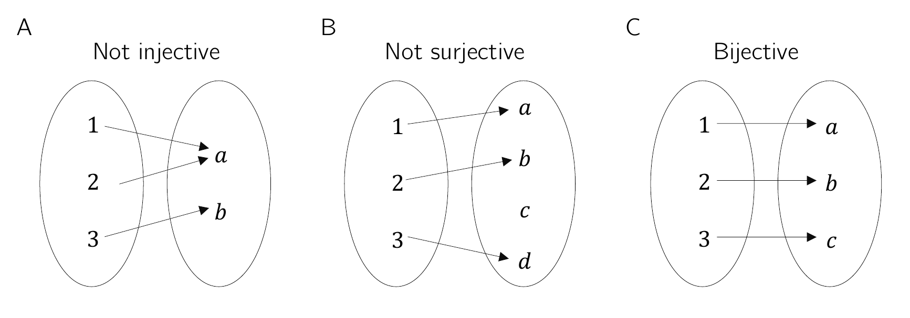
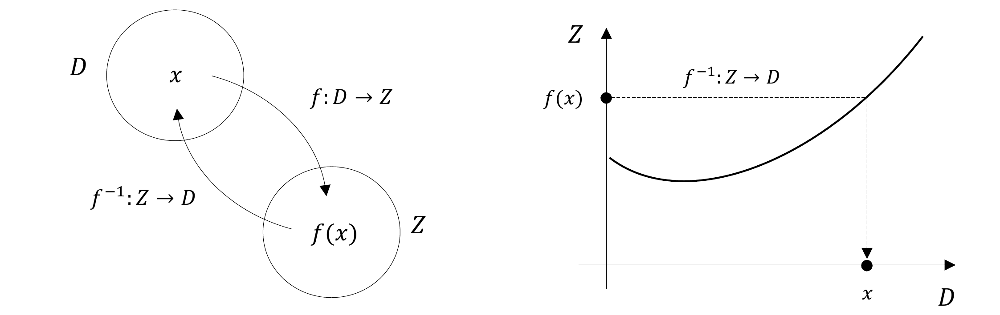
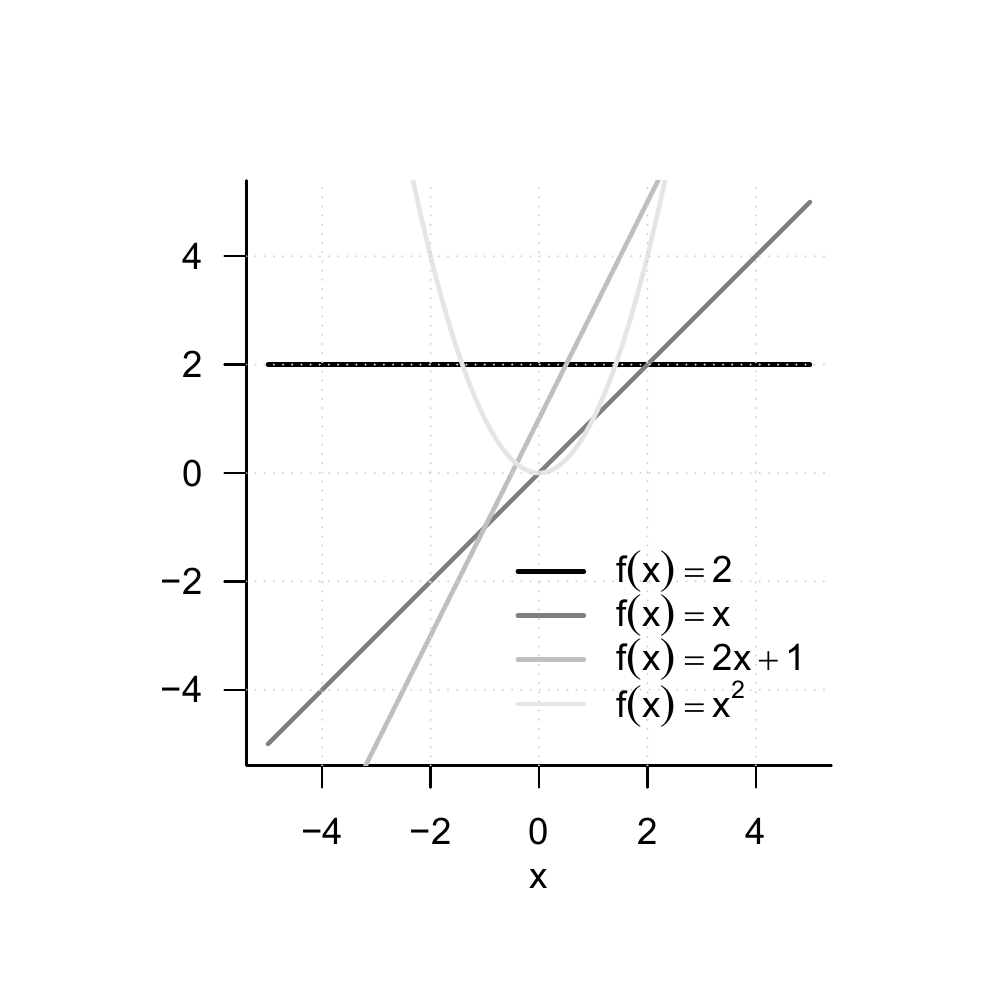
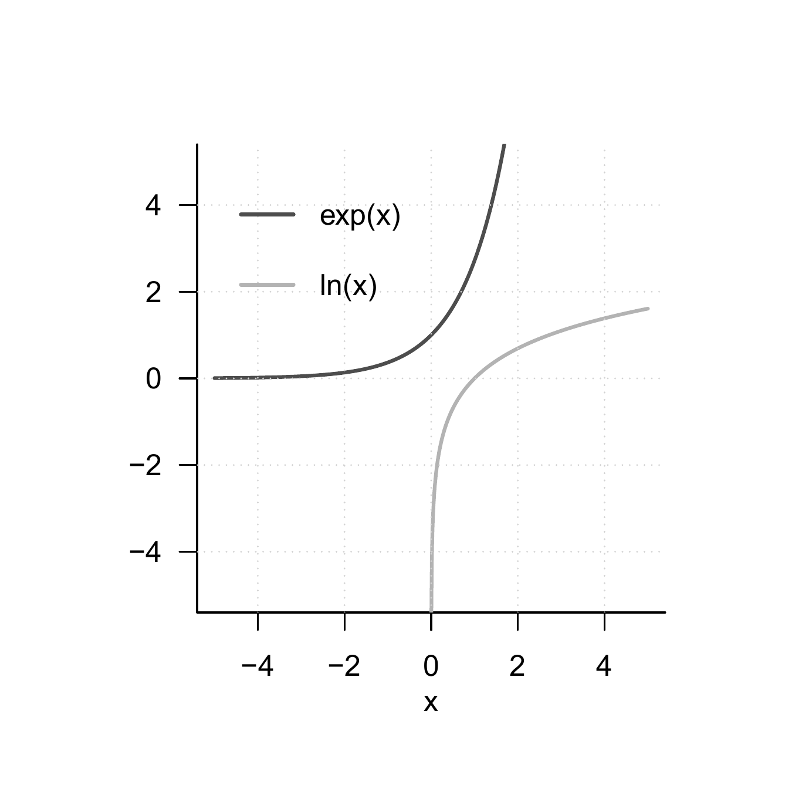
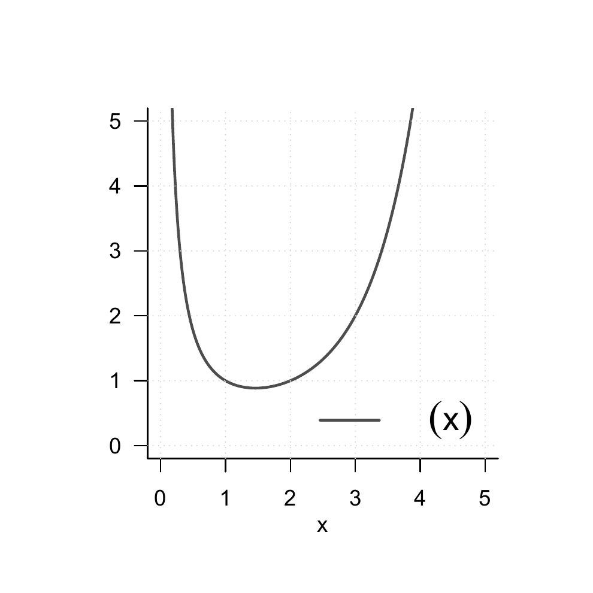

2 Functions
Alongside sets, functions are the second foundational pillar of modern mathematics. In this unit, we define the concept of a function, introduce first properties of functions, and give an overview of several elementary functions.
2.1 Definition and Properties
Definition 2.1 (Function) A function or mapping \(f\) is an assignment rule that assigns exactly one element of a set \(Z\) to each element of a set \(D\). \(D\) is called the domain of \(f\), and \(Z\) is called the codomain of \(f\). We write \[\begin{equation} f : D \to Z, x \mapsto f(x), \end{equation}\] where \(f : D \to Z\) is read as “the function \(f\) maps all elements of the set \(D\) uniquely to elements in \(Z\)” and \(x \mapsto f(x)\) is read as “\(x\), which is an element of \(D\), is mapped by the function \(f\) to \(f(x)\), where \(f(x)\) is an element of \(Z\).” The arrow \(\to\) denotes the mapping between the sets \(D\) and \(Z\), while the arrow \(\mapsto\) denotes the mapping between an element of \(D\) and an element of \(Z\).
It is essential to distinguish between the function \(f\) as an assignment rule and a value of the function \(f(x)\) as an element of \(Z\). \(x\) is the argument of the function (the function’s input), and \(f(x)\) is the value that the function \(f\) takes for the argument \(x\) (the function’s output). Usually, the definition of a function specifies, after \(f(x)\), the functional form of \(f\), that is, a rule for forming the value \(f(x)\) from \(x\). For example, in the following definition of a function \[\begin{equation} f : \mathbb{R} \to \mathbb{R}_{\ge 0}, x \mapsto f(x) := x^2 \end{equation}\] the definition of a power is used. Note that functions are always unique in the sense that, whenever the function is applied, they always assign one and the same \(f(x) \in Z\) to each \(x \in D\).
Figure 2.1 visualizes several aspects of the definition of a function. Figure 2.1 A first illustrates the central terms of the definition. Figure 2.1 B shows a first example of a function in which the function values assigned to the arguments are determined not by a computational rule but by direct definition. Figure 2.1 C and Figure 2.1 D use the same pictorial language to emphasize two aspects of the definition by means of counterexamples: the drawing in Figure 2.1 C is not the representation of a function, because by Definition 2.1 a function assigns each element of a set \(D\) exactly one element of a codomain \(Z\). The sketched assignment rule does not assign any element in \(Z\) to the element \(2 \in D\), and therefore it is not a function. Similarly, according to Definition 2.1, a function assigns exactly one element of a codomain \(Z\) to each element of a set \(D\). The assignment rule sketched in Figure 2.1 D assigns both the element \(a \in Z\) and the element \(b \in Z\) to \(1 \in D\), and therefore it is incompatible with Definition 2.1.

Thus, functions put elements of sets into relation with one another. The sets of these elements receive special names.
Definition 2.2 (Image, Range, Preimage Set, Preimage) Let \(f : D \to Z, x \mapsto f(x)\) be a function and let \(D' \subseteq D\) and \(Z' \subseteq Z\). The set \[\begin{equation} f(D') := \{z \in Z| \mbox{there exists an } x \in D' \mbox{ with } z = f(x)\} \end{equation}\] is called the image of \(D'\), and \(f(D) \subseteq Z\) is called the range of \(f\). Furthermore, the set \[\begin{equation} f^{-1}(Z') := \{x \in D | f(x) \in Z'\} \end{equation}\] is called the preimage set of \(Z'\). An \(x \in D\) with \(z = f(x) \in Z\) is called a preimage of \(z\).
Note that the range \(f(D)\) of \(f\) and the codomain \(Z\) of \(f\) need not be identical.
Example
To clarify the concepts introduced in Definition 2.2, we consider the function shown in Figure 2.2 A, \[ f:\{1,2,3,4,5\} \to \{a,b,c,d\}, x \mapsto f(x) := \begin{cases} f(1) := b \\ f(2) := d \\ f(3) := c \\ f(4) := c \\ f(5) := d \end{cases}. \tag{2.1}\] According to Definition 2.2, an image is always defined with respect to a subset \(D'\) of the domain \(D\). Thus, let \(D' := \{2,3\}\subset D\), as shown in Figure 2.2 B. Then the image of \(D'\) is the set of those \(z \in Z\) for which there exists an \(x \in D'\) such that \(z = f(x)\). Here, the relevant \(z \in Z\) for which such an \(x \in D'\) exists are precisely \(c,d\in Z\), because \(f(2) = d\) and \(f(3) = c\). Beyond these, there is no \(z \in Z\) with \(f(x) = z\) and \(x \in \{2,3\}\). By Definition 2.2, the range \(f(D)\) is the subset of those \(z \in Z\) for which there exists an \(x \in D\) such that \(z = f(x)\). This is true for all elements of \(Z\) except for \(a \in Z\), because there is no \(x \in D\) with \(a = f(x)\). For the function considered here, the range of \(f\) is therefore given by \(f(D) := \{b,c,d\}\).
Conversely, according to Definition 2.2, a preimage set is always defined with respect to a subset \(Z'\) of the codomain \(Z\). Thus, let \(Z' := \{c,d\}\subset Z\), as shown in Figure 2.2 C. Then the preimage set of \(Z'\) is the set of those \(x \in D\) for which \(f(x) \in Z'\). The elements of \(D\) whose function values under \(f\) are elements of \(Z'\) are precisely \(\{2,3,4,5\}\). By contrast, \(1 \in D\) is not an element of this preimage set, because \(f\) maps \(1 \in D\) to \(b \in Z\) and \(b \notin Z'\). Nevertheless, \(1 \in D\) is of course a preimage of \(b\).
Basic properties of functions are named in the following definition.
Definition 2.3 (Injectivity, Surjectivity, Bijectivity) Let \(f : D \to Z, x \mapsto f(x)\) be a function. \(f\) is called injective if, for every image element \(z \in f(D)\), there is exactly one preimage \(x \in D\). Equivalently, \(f\) is injective if \(x_1,x_2 \in D\) and \(x_1 \neq x_2\) imply \(f(x_1) \neq f(x_2)\). \(f\) is called surjective if \(f(D) = Z\), that is, if every element of the codomain \(Z\) has a preimage in the domain \(D\). Finally, \(f\) is called bijective if it is both injective and surjective. Bijective functions are also called one-to-one correspondences or one-to-one mappings.
Examples
We first illustrate Definition 2.3 using three (counter)examples in Figure 2.3. Figure 2.3 A shows the non-injective function \[\begin{equation} f : \{1,2,3\} \to \{a,b\}, x \mapsto f(x) := \begin{cases} f(1) := a \\ f(2) := a \\ f(3) := b \end{cases}. \end{equation}\] The function is non-injective because the element \(a\) in the range of \(f\) has more than one preimage in the domain of \(f\), namely the elements \(1\) and \(2\). Figure 2.3 B shows the non-surjective function \[\begin{equation} g : \{1,2,3\} \to \{a,b,c,d\}, x \mapsto g(x) := \begin{cases} g(1) := a \\ g(2) := b \\ g(3) := d \end{cases}. \end{equation}\] The function is non-surjective because the element \(c\) in the codomain of \(g\) has no preimage in the domain of \(g\). Finally, Figure 2.3 C shows the bijective function \[\begin{equation} h : \{1,2,3\} \to \{a,b,c\}, x \mapsto h(x) := \begin{cases} h(1) := a \\ h(2) := b \\ h(3) := c \end{cases}. \end{equation}\] For every element in the codomain of \(h\) there is exactly one preimage, so the function is injective and surjective and therefore bijective.

As a further example, consider the function \[\begin{equation} f : \mathbb{R} \to \mathbb{R}, x \mapsto f(x) := x^2 \end{equation}\] This function is not injective because, for example, with \(x_1 = 2 \neq -2 = x_2\) we have \(f(x_1) = 2^2 = 4 = (-2)^2 = f(x_2)\). Moreover, \(f\) is not surjective because, for example, \(-1 \in \mathbb{R}\) has no preimage under \(f\). However, if the domain of \(f\) is restricted to the non-negative real numbers, that is, if we define the function \[\begin{equation} \tilde{f} : [0,\infty[ \to [0,\infty[, x \mapsto \tilde{f}(x) := x^2, \end{equation}\] then, in contrast to \(f\), \(\tilde{f}\) is injective and surjective, hence bijective.
On the uncountability of the real numbers
At this point, we use the concepts of surjectivity and bijectivity of functions to deepen the idea of the uncountability of the real numbers a little. This idea says that there are different kinds of infinities, which is certainly not easy to grasp intuitively at first. Moreover, some aspects of probability theory are formulated in ways that accommodate the uncountability of the real numbers, so even a rough understanding of this property can help motivate some of the subtleties of probability theory. Specifically, we briefly sketch Cantor’s diagonal argument (Cantor (1891), Gray (1994)) for the uncountability of the real numbers. We begin by recording what, against the background of bijective mappings, is meant by a finite and a countably infinite set.
Definition 2.4 A set \(M\) is called finite if there exists a bijective mapping of the form \[\begin{equation} f:\mathbb{N}_n \to M \end{equation}\] onto the elements of \(M\). Furthermore, a set \(M\) is called countably infinite if there exists a bijective mapping of the form \[\begin{equation} f:\mathbb{N} \to M \end{equation}\] onto the elements of \(M\).
In the case of a finite set, each element of the set can thus be assigned a natural number with maximum value \(n < \infty\) in the sense of a bijective mapping. In the case of a countably infinite set, each element of the set can at least be assigned a natural number in the sense of a bijective mapping. The elements of these sets can therefore be counted.
Cantor (1891) showed that this is not true in general for the real numbers: no bijective mapping between the real numbers and the natural numbers can be constructed, and hence there must be more real numbers than natural numbers. More specifically, one can argue that even the interval \([0,1]\) already contains more real numbers than there are natural numbers, that is, no surjective function from \(\mathbb{N}\) to \([0,1]\) can be constructed.
Cantor’s argument has the following form. Suppose that \(f : \mathbb{N} \to [0,1]\) is an injective function represented in tabular form, for example as in Table 2.1.
| \(n\) | \(f(n)\) | ||||||||||
|---|---|---|---|---|---|---|---|---|---|---|---|
| \(1\) | 0. | 3 | 1 | 4 | 1 | 5 | 9 | 2 | 6 | 5 | \(\cdots\) |
| \(2\) | 0. | 8 | 9 | 4 | 5 | 9 | 7 | 8 | 1 | 0 | \(\cdots\) |
| \(3\) | 0. | 9 | 6 | 2 | 3 | 2 | 1 | 5 | 8 | 7 | \(\cdots\) |
| \(4\) | 0. | 5 | 3 | 6 | 8 | 8 | 8 | 9 | 7 | 3 | \(\cdots\) |
| \(5\) | 0. | 7 | 4 | 3 | 8 | 1 | 8 | 0 | 9 | 7 | \(\cdots\) |
| \(\vdots\) | \(\vdots\) |
Now construct another number in \([0,1]\) by adding \(1\) to each of the bold diagonal entries in Table 2.1 whenever the corresponding value is less than 9, and otherwise setting the value to 0. This is shown in Table 2.2.
| \(n\) | \(f(n)\) | ||||||||||
|---|---|---|---|---|---|---|---|---|---|---|---|
| \(1\) | 0. | 4 | 1 | 4 | 1 | 5 | 9 | 2 | 6 | 5 | \(\cdots\) |
| \(2\) | 0. | 8 | 0 | 4 | 5 | 9 | 7 | 8 | 1 | 0 | \(\cdots\) |
| \(3\) | 0. | 9 | 6 | 3 | 3 | 2 | 1 | 5 | 8 | 7 | \(\cdots\) |
| \(4\) | 0. | 5 | 3 | 6 | 9 | 8 | 8 | 9 | 7 | 3 | \(\cdots\) |
| \(5\) | 0. | 7 | 4 | 3 | 8 | 2 | 8 | 0 | 9 | 7 | \(\cdots\) |
| \(\vdots\) | \(\vdots\) |
The number thus constructed, \[\begin{equation} 0.40392... \end{equation}\] cannot occur in Table 2.1, because it differs from \(f(1)\) in its first decimal place, from \(f(2)\) in its second decimal place, from \(f(3)\) in its third decimal place, …, from \(f(n)\) in its \(n\)th decimal place, and so on indefinitely. Thus there is at least one number in \([0,1]\) to which no natural number can be assigned. The injective mapping \(f\) is not surjective and therefore not bijective. Consequently, \([0,1]\) is not countably infinite and is accordingly called uncountable.
2.2 Types of Functions
By composition, further functions can be formed from given functions.
Definition 2.5 (Composition of Functions) Let \(f : D \to Z\) and \(g : Z \to S\) be two functions, where the range of \(f\) is assumed to agree with the domain of \(g\). Then \[\begin{equation} g \circ f : D \to S, x \mapsto (g \circ f)(x) := g(f(x)) \end{equation}\] defines a function called the composition of \(f\) and \(g\).
The notation for composed functions takes a little getting used to. It is important to recognize that \(g \circ f\) denotes the composed function and \((g \circ f)(x)\) denotes an element in the codomain of the composed function. Intuitively, when evaluating \((g \circ f)(x)\), one first applies the function \(f\) to \(x\) and then applies the function \(g\) to the element \(f(x)\) of \(Z\). This is captured by the functional form \(g(f(x))\). For simplicity, the composition of two functions is often denoted by a single letter; for example, one writes \(h := g \circ f\) with \(h(x) = g(f(x))\). A mild source of confusion can arise when elements in the codomain of \(f\) are denoted by \(y\), so that the notation \(y = f(x)\) and \(h(x) = g(y)\) is used. However, this notation is sometimes needed for notational simplicity. We visualize Definition 2.5 in Figure 2.4.
As an example of the composition of two functions, consider \[\begin{equation} f : \mathbb{R} \to \mathbb{R}, x \mapsto f(x) := -x^2 \end{equation}\] and \[\begin{equation} g : \mathbb{R} \to \mathbb{R}, x \mapsto g(x) := \exp(x). \end{equation}\] In this case, the composition of \(f\) and \(g\) is \[\begin{equation} g \circ f : \mathbb{R} \to \mathbb{R}, x \mapsto (g \circ f)(x) := g(f(x)) = \exp\left(-x^2\right). \end{equation}\]
A first application of function composition appears in the following definition.
Definition 2.6 (Inverse Function) Let \(f : D \to Z, x \mapsto f(x)\) be a bijective function. Then the function \(f^{-1}\) with \[\begin{equation} f^{-1} \circ f : D \to D, x \mapsto (f^{-1} \circ f)(x) := f^{-1}(f(x)) = x \end{equation}\] is called the inverse function, inverse mapping, or simply the inverse of \(f\).
Inverse functions are always bijective. This follows because \(f\) is bijective and therefore each \(x \in D\) is assigned exactly one \(f(x) = z \in Z\). Hence, each \(z \in Z\) is also assigned exactly one \(x \in D\), namely \(f^{-1}(f(x)) = x\). Intuitively, the inverse function of \(f\) undoes the effect of \(f\) on an element \(x\). We visualize Definition 2.6 in Figure 2.5 A.

If one considers the graph of a function in a Cartesian coordinate system, then applying a function to a value on the \(x\)-axis leads to a value on the \(y\)-axis. Applying the inverse function correspondingly leads from a value on the \(y\)-axis to a value on the \(x\)-axis. We visualize this in Figure 2.5 B. For example, consider the function \[\begin{equation} f : \mathbb{R} \to \mathbb{R}, x \mapsto f(x) := 2x =:y. \end{equation}\] Then the inverse function of \(f\) is given by \[\begin{equation} f^{-1} : \mathbb{R} \to \mathbb{R}, y \mapsto f^{-1}(y) := \frac{1}{2}y, \end{equation}\] because for every \(x \in \mathbb{R}\), \[\begin{equation} (f^{-1} \circ f)(x) := f^{-1}(f(x)) = f^{-1}(2x) = \frac{1}{2}\cdot 2x = x. \end{equation}\]
An important class of functions consists of linear maps.
Definition 2.7 (Linear Map) A map \(f : D \to Z, x \mapsto f(x)\) is called a linear map if, for \(x,y \in D\) and a scalar \(c\), \[\begin{equation} f(x + y) = f(x) + f(y) \tag*{(additivity)} \end{equation}\] and \[\begin{equation} f(cx) = cf(x) \tag*{(homogeneity)} \end{equation}\] hold. A map for which the above properties do not hold is called a nonlinear map.
Linear maps are often known as “straight lines.” The general definition of linear maps is not completely congruent with this intuition. In particular, linear maps are only those functions that map zero to zero. We show this in the following theorem.
Theorem 2.1 (Linear Map of Zero) Let \(f : D \to Z\) be a linear map. Then \[\begin{equation} f(0) = 0. \end{equation}\]
Proof. First note that by additivity of \(f\), \[\begin{equation} f(0) = f(0 + 0) = f(0) + f(0). \end{equation}\] Adding \(-f(0)\) to both sides of the above equation gives \[\begin{equation} f(0) - f(0) = f(0) + f(0) - f(0) \Leftrightarrow f(0) = 0 \end{equation}\] and this proves the claim.
We illustrate the concept of a linear map with two examples.
- For \(a \in \mathbb{R}\), the map \[\begin{equation} f : \mathbb{R} \to \mathbb{R}, x \mapsto f(x) := ax \end{equation}\] is a linear map because \[\begin{equation} f(x + y) = a(x + y) = ax + ay = f(x) + f(y) \mbox{ and } f(cx) = acx = cax = cf(x). \end{equation}\]
- For \(a,b \in \mathbb{R}\), by contrast, the map \[\begin{equation} f : \mathbb{R} \to \mathbb{R}, x \mapsto f(x) := ax + b \end{equation}\] is nonlinear because, for example, for \(a := b := 1\), \[\begin{equation} f(x+y) = 1(x+y)+1 = x + y + 1 \neq x + 1 + y + 1 = f(x) + f(y). \end{equation}\]
A map of the form \(f(x) := ax + b\) is called a linear-affine map or linear-affine function. Somewhat imprecisely, functions of the form \(f(x) := ax + b\) are sometimes also called linear functions.
Besides the types of functions discussed so far, there are many further classes of functions. In the following definition, we classify functions by the dimensionality of their domains and codomains. This type of function classification is often helpful for gaining an initial overview of a mathematical model.
Definition 2.8 (Function Types) We distinguish
- univariate real-valued functions of the form \[\begin{equation} f : \mathbb{R} \to \mathbb{R}, x \mapsto f(x), \end{equation}\]
- multivariate real-valued functions of the form \[\begin{equation} f : \mathbb{R}^n \to \mathbb{R}, x \mapsto f(x) = f(x_1,...,x_n), \end{equation}\]
- and multivariate vector-valued functions of the form \[\begin{equation} f : \mathbb{R}^n \to \mathbb{R}^m, x \mapsto f(x) = \begin{pmatrix} f_1(x_1,...,x_n) \\ \vdots \\ f_m(x_1,...,x_n) \end{pmatrix}, \end{equation}\] where \(f_i, i = 1,...,m\) are called the components or component functions of \(f\).
In physics, multivariate real-valued functions are called scalar fields, and multivariate vector-valued functions are called vector fields. In some applications, matrix-variate matrix-valued functions also occur.
2.3 Elementary Functions
By elementary functions we mean a small set of univariate real-valued functions that frequently appear as building blocks of more complex functions. These are the polynomial functions, the exponential function, the logarithm function, and the gamma function. In the following, we give the definitions of these functions and state their main properties as theorems, and then present their graphs. For proofs of the properties introduced here, we refer to the advanced literature.
Definition 2.9 (Polynomial Functions) A function of the form \[\begin{equation} f : \mathbb{R} \to \mathbb{R}, x \mapsto f(x) := \sum_{i=0}^{k} a_i x^i = a_0 + a_1 x^1 + a_2 x^2 + \cdots + a_k x^k \end{equation}\] is called a polynomial function of degree \(k\) with coefficients \(a_0, a_1,...,a_k \in \mathbb{R}\). Typical polynomial functions are listed in Table 2.3.
| Name | Form | Coefficients |
|---|---|---|
| Constant function | \(f(x) = a\) | \(a_0 := a\), \(a_i := 0, i > 0\) |
| Identity function | \(f(x) = x\) | \(a_0 := 0\), \(a_1 := 1\), \(a_i := 0, i > 1\) |
| Linear-affine function | \(f(x) = ax + b\) | \(a_0 := b\), \(a_1 := a\), \(a_i := 0, i > 1\) |
| Square function | \(f(x) = x^2\) | \(a_0 := 0\), \(a_1 := 0\), \(a_2 := 1\), \(a_i := 0, i > 2\) |

Figure 2.6 shows the graphs of the polynomial functions listed in Definition 2.9.
An important pair of functions consists of the exponential function and the logarithm function.
Theorem 2.2 (Exponential Function and Its Properties) The exponential function is defined as \[\begin{equation} \exp : \mathbb{R} \to \mathbb{R}, x \mapsto \exp(x) := e^x := \sum_{n=0}^\infty \frac{x^n}{n!} = 1 + x + \frac{x^2}{2!} + \frac{x^3}{3!} + \frac{x^4}{4!} + \cdots \end{equation}\] Among others, the exponential function has the properties listed in Table 2.4.
| Property | Meaning |
|---|---|
| Range | \(x \in ]-\infty,0[ \Rightarrow \exp(x) \in ]0,1[\) |
| \(x \in ]0,\infty[\quad\,\, \Rightarrow \exp(x) \in ]1,\infty[\) | |
| Monotonicity | \(x < y \Rightarrow \exp(x) < \exp(y)\) |
| Special values | \(\exp(0) = 1\) and \(\exp(1) = e\) |
| Summation property | \(\exp(x + y) = \exp(x)\exp(y)\) |
| Subtraction property | \(\exp(x - y) = \frac{\exp(x)}{\exp(y)}\) |
In particular, the exponential function only takes positive values and intersects the \(y\)-axis at \(x = 0\). The number \(\exp(1) := e \approx 2.71...\) is called Euler’s number. Finally, the special values of the exponential function imply \[\begin{equation} \exp(x)\exp(-x) = \exp(x - x) = \exp(0) = 1. \end{equation}\]
Theorem 2.3 (Logarithm Function and Its Properties) The logarithm function is defined as the inverse function of the exponential function, \[\begin{equation} \ln : ]0,\infty[ \to \mathbb{R}, x \mapsto \ln(x) \mbox{ with } \ln(\exp(x)) = x \mbox{ for all } x \in \mathbb{R}. \end{equation}\] Among others, the logarithm function has the properties listed in Table 2.5.
| Property | Meaning |
|---|---|
| Range | \(x \in \, ]0,1[\,\,\, \Rightarrow \ln(x) \in\,]-\infty,0[\) |
| \(x \in \, ]1,\infty[ \Rightarrow \ln(x) \in\, ]0,\infty[\) | |
| Monotonicity | \(x < y \Rightarrow \ln(x) < \ln(y)\) |
| Special values | \(\ln(1) = 0\) and \(\ln(e) = 1\) |
| Product property | \(\ln(xy) = \ln(x) + \ln(y)\) |
| Power property | \(\ln(x^c) = c\ln(x)\) |
| Division property | \(\ln\left(\frac{1}{x}\right) = - \ln (x)\) |
In contrast to the exponential function, the logarithm function takes both negative and positive values. The logarithm function intersects the \(x\)-axis at \(x = 1\). The product property and the power property are central when calculating with the logarithm function. Intuitively, they can be remembered as: “The logarithm function turns products into sums and powers into products.” The graphs of the exponential and logarithm functions are shown in Figure 2.7.

A frequent companion in probability theory is the gamma function.
Definition 2.10 (Gamma Function) The gamma function is defined by \[\begin{equation} \Gamma : \mathbb{R} \to \mathbb{R}, x \mapsto \Gamma(x) := \int_0^\infty \xi^{x-1}\exp(-\xi)\,d\xi \end{equation}\] Among others, the gamma function has the properties listed in Table 2.6.
| Property | Meaning |
|---|---|
| Special values | \(\Gamma(1) = 1\) |
| \(\Gamma\left(\frac{1}{2} \right) = \sqrt{\pi}\) | |
| \(\Gamma(n) = (n-1)!\) for \(n \in \mathbb{N}\) | |
| Recursion property | For \(x>0\), \(\Gamma(x+1) = x\Gamma(x)\) |
A section of the graph of the gamma function is shown in Figure 2.8.
